De Meo z zadowoleniem przyjmuje odrzucenie przez Włochy normy Euro 7

Luca de Meo, dyrektor generalny francuskiego producenta samochodów Renault, który sam jest Włochem, podziękował włoskiemu rządowi za odrzucenie proponowanych przez ten kraj nowych przepisów dotyczących normy emisji spalin Euro 7 . Według Automotive News Europe, jako prezesa europejskiego lobby motoryzacyjnego ACEA, mogłoby to odwrócić uwagę przemysłu motoryzacyjnego od drogi ku elektryfikacji. Zaostrzenie dopuszczalnych wartości emisji zanieczyszczeń, które mają obowiązywać od 2025 r. dla samochodów osobowych i dostawczych oraz od 2027 r. dla ciężarówek i autobusów, będzie negocjowane między krajami UE a ustawodawcami jeszcze w tym roku. Ustawa ta jest wdrażana równolegle z uchwalonym już „ zakazem silników spalinowych” , który zacznie obowiązywać od 2035 r. i który pozwoli na rejestrację wyłącznie samochodów osobowych bez szkodliwych dla klimatu emisji. Jednak tylne drzwi są nadal otwarte dla tak zwanych e-paliw . „Chcą wprowadzić nowe przepisy, które odciągną nas od naszego zadania, jakim jest przekształcenie branży ”, mówi de Meo Automotive News Europe. Chciałby, aby Komisja Europejska ponownie rozważyła plany wdrożenia tego nowego standardu. Dlatego popiera negatywne nastawienie swojego kraju – powiedział na imprezie w Trydencie. „Włochy zajęły bardzo jasne stanowisko w tej sprawie i dziękujemy temu krajowi za wsparcie ” – powiedział tam. Włoski rząd w osobie ministra transportu Matteo Salviniego ogłosił niedawno, że znalazł w Europie wystarczającą liczbę zwolenników, którzy również chcieliby odrzucić nową normę emisji, aby temu zapobiec. Są to najwyraźniej głównie kraje Europy Wschodniej. Można by przypuszczać, że nowe przepisy mogą sprawić, że pojazdy spalinowe będą droższe o kilka tysięcy euro, a mówi się o ponad 10 000 euro za autobusy i ciężarówki. Z kolei według doniesień medialnych UE przyjmuje w swoich kalkulacjach kilkaset euro za samochody osobowe i 2800 euro za większe pojazdy.
Paryż: 50 nowych taksówek napędzanych wodorem od Stellantis
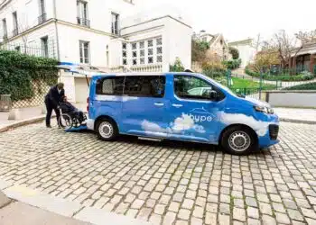
Grupa motoryzacyjna Stellantis i Hype, niezależny gracz w dziedzinie mobilności wodorowej, doszły do porozumienia w sprawie dostawy i eksploatacji początkowo 50 taksówek wodorowych. Według Stellantis w niedawnym komunikacie prasowym , wykorzystane modele to Peugeot e-Expert Hydrogen i Citroën ë-Jumpy Hydrogen . Cecha szczególna: pojazdy są specjalnie dostosowane do potrzeb osób o ograniczonej sprawności ruchowej. Można przewieźć sześciu pasażerów lub czterech pasażerów plus jeszcze jednego na wózku inwalidzkim, którzy mogą wejść na pokład przez rampę z tyłu. Oferta odpowiada kilku strategicznym priorytetom wyznaczonym przez francuski rząd: szybkiej poprawie jakościowej i ilościowej zakresu usług transportowych dla osób o ograniczonej sprawności ruchowej, przyspieszeniu transformacji energetycznej za pomocą zeroemisyjnych środków transportu (Crit „Air 0) i działalności przemysłowej w Stellantis site d'Hordain w regionie Hauts-de-France. Stellantis zwraca uwagę, że pojazdy napędzane wodorem są idealne dla „intensywnych użytkowników” w centrum Paryża dzięki zasięgowi ponad 400 km, procesowi tankowania, który można przeprowadzić w ciągu trzech minut, zerowej emisji i bez uszczerbku dla użytecznej pojemności. Z kolei Hype chce wprowadzić specjalne usługi dla osób o ograniczonej sprawności ruchowej, aby zapewnić ciągłą dostępność, wysoką jakość obsługi i wykonanie „szyte na miarę”. Firma chce również udostępnić w tym celu specjalną aplikację do rezerwacji, aby osoby o ograniczonej sprawności ruchowej miały priorytetowy dostęp. W ramach partnerstwa Stellantis i Hype ogłaszają, że do końca 2024 roku będą w stanie wdrożyć do 1000 takich bezemisyjnych, szerokokadłubowych taksówek. Te potencjalne dodatkowe wolumeny są związane z uzyskaniem koncesji na prowadzenie „Pariser Taxi PMR”, która jest obecnie przygotowywana przez władze francuskie. „ Jestem zachwycony pierwszą dostawą 50 taksówek wodorowych Peugeot i Citroën PMR Crit'Air 0 w ramach naszego partnerstwa ze Stellantis, co stanowi nowy ważny krok w ewolucji Hype i sektora przemysłu wodorowego”, mówi Mathieu Gardies, Założyciel i CEO hype.
Ford postrzega chińskich producentów jako najostrzejszą konkurencję
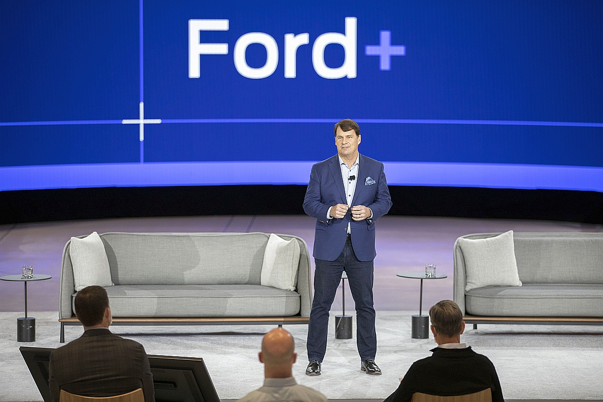
Dyrektor generalny Forda, Jim Farley, powiedział Automotive News, że chińscy producenci samochodów elektrycznych są jego głównymi konkurentami. I że Ford ma również problemy z konkurowaniem pod względem kosztów na mniejszą skalę. Chińczycy są postrzegani jako „główni konkurenci, a nie GM czy Toyota, Chińczycy będą siłą napędową ”, powiedział Farley na szczycie Morgan Stanley Sustainable Finance Summit. Dyrektor generalny Forda wyjaśnia, że największy na świecie rynek samochodowy, Chiny, mają jedną z najlepszych technologii akumulatorowych i dominują w produkcji pojazdów elektrycznych. Wymienił BYD , Geely , Great Wall, Changan i SAIC jako „zwycięzców” wśród chińskich producentów samochodów. Farley powiedział, że aby pokonać chińskich producentów samochodów, Ford potrzebuje charakterystycznego brandingu, który, jak twierdzi, ma, lub niższych kosztów. „Ale jak możesz ich pokonać pod względem kosztów, skoro są pięć razy większe od nas?”, jak powiedział Farley. „Europejczycy wpuścili (chińskich producentów samochodów) – a teraz sprzedają hurtowo w Europie”. W związku z tym Ford pozycjonuje się szeroko na swoim rodzimym rynku w USA. I ogłosił w lutym, że zainwestuje 3,5 miliarda dolarów w budowę fabryki akumulatorów do pojazdów elektrycznych w Michigan, wykorzystując technologię chińskiego partnera CATL do produkcji tańszych akumulatorów. W międzyczasie rynek krajowy również boryka się z trudnościami. Dzięki Tesli. Czasami ogromne obniżki cen Tesli wywołują poruszenie na scenie e-samochodów . Renault ponownie zastanawia się, a nawet dokonuje przeglądu całej swojej strategii cenowej . Z drugiej strony Ford widzi Teslę w niekorzystnej sytuacji . Właśnie dlatego, że producent, pomimo najwyższej sprzedaży Modelu Y , zmaga się z szeregiem nowszych konkurentów w Chinach i na innych rynkach. Niedawno ogłoszono również partnerstwo.
VW: Pojawiły się plany budowy indonezyjskiej fabryki akumulatorów
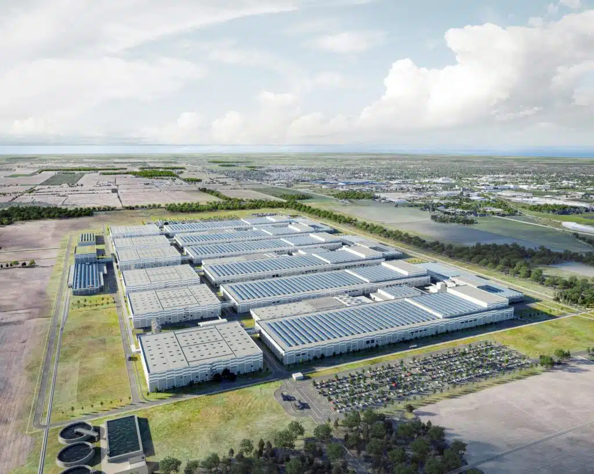
Według doniesień lokalnych mediów, Grupa Volkswagen planuje budowę fabryki akumulatorów do samochodów elektrycznych w Indonezji. Inwestycja, którą ma zrealizować akumulatorowa spółka zależna Volkswagena PowerCo, opiewa na równowartość ok. 4,7 mld euro. Mówi się, że lokalizacja nowej fabryki została już ustalona, ale nie została jeszcze oficjalnie ogłoszona. Oprócz produkcji akumulatorów fabryka będzie produkować również samochody elektryczne. Chociaż nie ogłoszono jeszcze żadnych konkretnych szczegółów dotyczących mocy produkcyjnych ani planowanego terminu rozpoczęcia, pokaźna suma inwestycji sugeruje, że produkcja ogniw akumulatorowych jest znacznie droższa niż sam montaż akumulatorów. W ostatnich tygodniach ogłoszono , że PowerCo planuje współpracować z partnerami w celu stworzenia ekosystemu baterii pojazdów elektrycznych w Indonezji. Mówi się, że partnerami są Ford , firma wydobywcza Vale i producent materiałów do akumulatorów Huayou Cobalt. Zaangażowana jest również francuska firma wydobywcza Eramet i kilka firm indonezyjskich. Ze względu na bogate złoża surowców w Indonezji, zwłaszcza niklu, skupienie się na tym metalu ma sens. W rzeczywistości pod koniec marca Ford ogłosił wspólne inwestycje z Vale i Huayou Cobalt w zakład przetwórstwa niklu w Indonezji . Pomimo obaw o standardy bezpieczeństwa w indonezyjskich kopalniach, prezydent kraju Joko Widodo zapowiedział ściślejsze monitorowanie standardów bezpieczeństwa i ochrony środowiska. Zainteresowanie europejskich firm inwestowaniem w tym kraju jest postrzegane jako znak, że problemy te są rozwiązywane.Do tej pory poza Europą Volkswagen potwierdził tylko fabrykę ogniw akumulatorowych o mocy 90 GWh w Kanadzie , wspieraną przez znaczne dotacje od rządu kanadyjskiego. W Europie Volkswagen planuje do 2030 roku zbudować fabryki ogniw o mocy około 240 gigawatogodzin. Obejmuje to plan budowy i eksploatacji sześciu fabryk o mocy 40 GWh w Europie. Jak dotąd potwierdzone lokalizacje fabryk ogniw akumulatorowych Volkswagena w Europie to Salzgitter w Niemczech i Sagunt w Hiszpanii . Dalsza produkcja ogniw elementarnych VW planowana jest u partnera Northvolt w Szwecji . Mówi się również o fabryce w Europie Wschodniej, ale konkretna lokalizacja i decyzja inwestycyjna zostały przesunięte ze względu na niepewność gospodarczą i wysokie ceny energii w regionie.
Ionity obniża ceny abonamentowego modelu ładowania
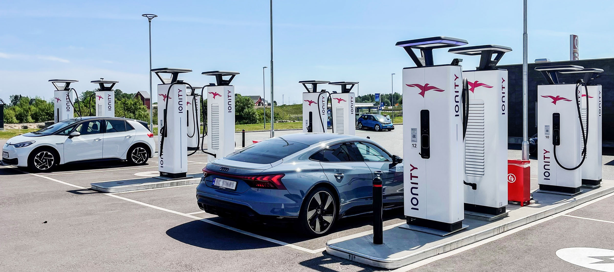
Ionity dostosowało warunki swojego modelu abonamentowego Ionity Passport na letni sezon podróżniczy. Stawka miesięczna będzie tańsza, ale wzrosną koszty za kilowatogodzinę. Nie ma jednak żadnych zmian w stosunku do znanej stawki 0,79 euro/kWh za ładowanie ad-hoc. Ionity wprowadziło subskrypcję Passport w październiku 2021 roku . W przypadku nowych umów paszportowych od 6 czerwca minimalny okres obowiązywania umowy wynoszący dwanaście miesięcy nie będzie już obowiązywał. Paszport Ionity można anulować w dowolnym momencie z miesięcznym wypowiedzeniem – dlatego powinien się opłacać również za poszczególne miesiące z długimi podróżami, np. na wakacje. Opłata miesięczna spada z dotychczasowych 17,99 euro do 11,99 euro. Ale: Do tej pory klienci mogli znacznie obniżyć cenę ładowania w zamian za 17,99 euro – do 35 centów za kilowatogodzinę. Zgodnie z nowym modelem cenowym warunki za naliczoną kilowatogodzinę energii elektrycznej są „zawsze o 20 centów niższe od aktualnie obowiązującej taryfy Ionity Direct”. Na przykład każdy, kto ładuje z Ionity Passport w Niemczech, zapłaci 0,59 euro/kWh zamiast ceny ad hoc 0,79 euro/kWh. Odchylenia od tej ceny mogą wystąpić w niektórych krajach europejskich ze względu na odpowiednią walutę lokalną, stawki VAT specyficzne dla danego kraju lub lokalne specyfiki, mówi Ionity. Subskrypcja Passport powinna być łatwa do zarezerwowania za pośrednictwem własnej aplikacji Ionity na smartfony. Operator wylicza, że w porównaniu z taryfą „Ionity Direct” (tj. 0,79 euro/kWh) abonament opłaca się już od 60 kWh miesięcznie. Odpowiada to „około dwóm procesom ładowania lub przejechaniu 300 kilometrów (km) samochodem elektrycznym przy średnim zużyciu 20 kWh/100 km”. Uzasadniając nowy model cenowy, w oświadczeniu stwierdzono, że Ionity Passport uwzględnia „zmieniające się wymagania rynku i klientów”. Elli, spółka zależna VW, która pobiera opłaty, również podkreśliła nową elastyczność, podnosząc ceny w czerwcu, ponieważ minimalny okres obowiązywania umowy został również skrócony z dwunastu do jednego miesiąca. Ionity twierdzi, że obecnie obsługuje ponad 480 parków ładowania z ponad 2300 punktami ładowania HPC w 24 krajach. Każdy punkt ładowania oferuje do 350 kW. Podział mocy, w którym maksymalna moc znamionowa jest dzielona między dwa lub więcej punktów ładowania, nie istnieje w Ionity.
Volvo Penta i FTMH zelektryfikują wózki widłowe

Volvo Penta wraz z włoskim producentem FTMH (Fantuzzi Team Material Handling) opracowuje gamę elektrycznych wózków widłowych o masie do 52 ton. Pierwszym zelektryfikowanym modelem będzie 26-tonowy FTF 26-12, obecnie wyposażony w silnik wysokoprężny Volvo Penta, jako FTF 26-12 EL. 600-woltowy napęd elektryczny wykorzystuje system akumulatorów Volvo Penta o pojemności 360 kWh, który można ładować z mocą do 250 kW. Według Volvo proces ładowania trwa „nieco ponad godzinę”. „Ta współpraca to kolejny dowód, który podkreśla naszą koncentrację i duży potencjał segmentu transportu materiałów” — mówi Zeyd Okutan, menedżer produktu w Volvo Penta. „Operacje portowe i terminale logistyczne dobrze nadają się do elektryfikacji i widzimy ogromne możliwości dla flot pojazdów bezemisyjnych, w tym wózków widłowych, wózków do obsługi pustych kontenerów, wózków wysokiego składowania i ciągników terminalowych. Dobra infrastruktura i dobrze zdefiniowane cykle pracy ułatwią transformację branży, przynosząc korzyści, w tym zmniejszenie hałasu, wydłużenie czasu sprawności i produktywności”. Eugenio Ponzini, kierownik techniczny w FTMH, dodał: „Nasz wyłączny dealer Volvo Penta we Włoszech, CARMI, jest kluczowym partnerem w projekcie, wspierając rozwój tego, co wszyscy mamy nadzieję, będzie pierwszym z szerokiej gamy elektrycznych maszyn do transportu materiałów, które być produkowany w Brescello”. Volvo Penta działa we wszystkich rodzajach mobilności, od wysiłków zmierzających do elektryfikacji sektora morskiego z Danfoss Editron, po budowę elektrycznych układów napędowych dla elektrycznych wozów strażackich z Rosenbauer. W 2019 roku firma zelektryfikowała również prom z silnikiem Diesla .
Allego zainstaluje 1500 punktów ładowania w sklepach meblowych w Niemczech
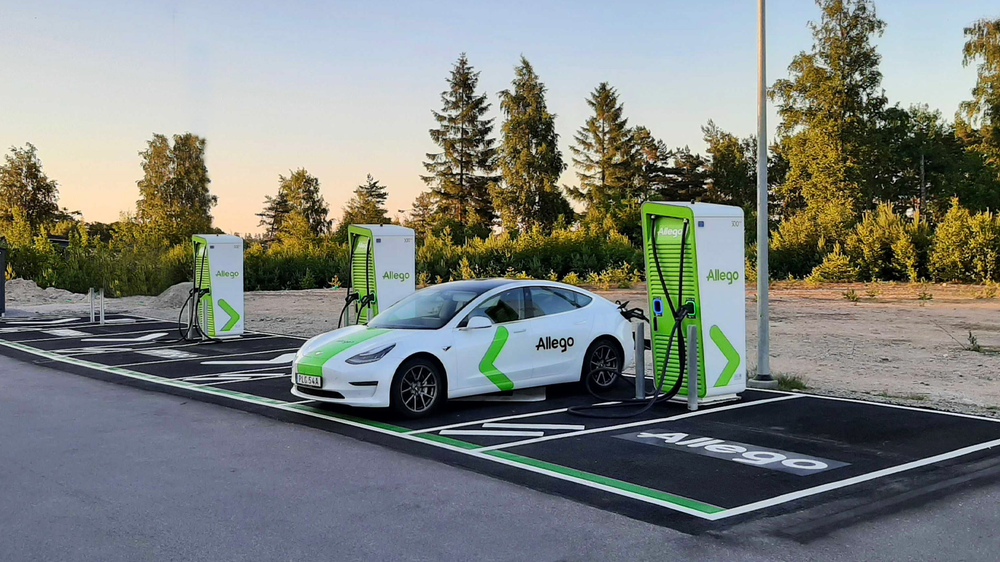
Allego zainstaluje 1500 punktów ładowania przy salonach meblowych Grupy Porta. Niemiecka firma rodzinna, która posiada sklepy w Czechach i na Słowacji, zdecydowała się na zestaw ładowarek o mocy 50 i 150 kW dostępnych zarówno dla klientów, jak i osób trzecich. Według Allego zamówienie obejmuje stacje ładowania dla 123 obiektów Grupy Porta, przy czym firma koncentruje się na Niemczech. Pierwsze stacje szybkiego ładowania działają już w sklepach Porta w Poczdamie (Brandenburgia), Altenburgu (Turyngia) i Markranstädt (Saksonia). Ponadto firma zajmująca się infrastrukturą ładowania wyposażyła siedzibę Porta Group w Porta Westfalica (Wschodnia Westfalia) w stacje ładowania dużej mocy dostępne dla pracowników i gości. Zdaniem partnerów stacje ładowania są przyszłościowe i można je rozbudować do ultraszybkiego ładowania. Będą one dostępne dla zwiedzających w lokalizacjach Porta oraz dla przejeżdżających kierowców samochodów elektrycznych. Wszystkie stacje ładowania można znaleźć w aplikacji Smoov firmy Allego oraz w aplikacjach ładujących innych firm. Kierownictwo Grupy Porta stwierdziło, że poszukuje partnera, który mógłby utorować drogę w przyszłość w zakresie skalowalności oraz innowacyjnej wiedzy i doświadczenia z firmami takimi jak nasza. Zgodnie z oświadczeniem, po naszym pierwszym jeździe testowej w Poczdamie w 2021 roku, zdecydowaliśmy się kontynuować tę drogę z Allego. Dyrektor generalny Allego, Mathieu Bonnet, dodał: „Podjęliśmy świadomą decyzję o oferowaniu niższych mocy ładowania i większej liczby punktów ładowania, ponieważ czas przebywania w sklepach meblowych jest zwykle dłuższy. Cieszymy się, że możemy współpracować z Porta, firmą, która przez lata zbudowała niesamowitą sieć sklepów meblowych i doskonale wpisuje się w nasze własne ambicje oferowania niezawodnej i rozległej sieci rozwiązań do ładowania w całych Niemczech”. Grupa Porta obejmuje 30 salonów meblowych Porta oraz około 100 oddziałów dyskonta meblowego SB-Möbel BOSS w Niemczech. Do grupy należy również detalista meblowy Möbel Letz, obecny w Saksonii-Anhalt, obok 22 sklepów meblowych Grupy ASKO w Czechach i na Słowacji.
Firma Automotive Cells otwiera swoją pierwszą gigafabrykę akumulatorów we Francji

Stellantis połączył siły z TotalEnergies i Mercedes-Benz, aby uczcić otwarcie gigantycznej fabryki akumulatorów Automotive Cells Company (ACC) w Billy-Berclau Douvrin we Francji - pierwszego z trzech planowanych obiektów w Europie. Przy początkowej zdolności produkcyjnej 13 gigawatogodzin (GWh), która ma wzrosnąć do 40 GWh do 2030 r., zakład będzie dostarczał wysokowydajne akumulatory litowo-jonowe o „ minimalnym ” śladzie węglowym. Według Stellantis ten pierwszy z trzech europejskich zakładów produkcyjnych zostanie uruchomiony przed końcem 2023 roku. „Gigafactory przyczyni się do realizacji celu Stellantis, jakim jest zwiększenie zdolności produkcyjnej akumulatorów w Europie do 250 GWh do 2030 r. ”, czytamy w niedawnym komunikacie prasowym. Ma on na celu wsparcie firmy w jej misji oferowania szerokiej gamy technologii akumulatorowych, które odpowiadają potrzebom klientów w całym portfolio marki Stellantis.Dzięki dodatkowym kontraktom na dostawy i łącznie pięciu gigafabrykom w Europie i Ameryce Północnej Stellatis zapewnił sobie moc około 400 GWh do 2030 roku. Firma ma obecnie na rynku 24 modele samochodów elektrycznych i do końca 2024 r. prawie podwoi tę liczbę do 47. Stellantis planuje sprzedać ponad 75 modeli pojazdów elektrycznych i 5 milionów pojazdów elektrycznych na całym świecie do 2030 r., aby sprzedawać je na całym świecie. Dziś Stellantis Peugeot e-208 i Fiat 500 Electric znajdują się w pierwszej piątce najlepiej sprzedających się samochodów elektrycznych we Francji i w pierwszej dziesiątce w Europie. Ponieważ chemia akumulatorów wciąż ewoluuje, Stellantis „dokonuje przeglądu wszystkich technologii, aby sprostać różnorodnym potrzebom szerokiej bazy klientów, aby zapewnić czystą, bezpieczną i niedrogą mobilność ” . Obiecujące rozwiązania, takie jak technologia akumulatorów półprzewodnikowych firmy Factorial orazZdaniem Stellantisa akumulatory litowo-siarkowe Lyten mogą pomóc poprawić osiągi pojazdu i wrażenia klientów, tworząc bardziej zrównoważone wrażenia z korzystania z pojazdu elektrycznego dla wszystkich.
Renault 5 staje się magazynem energii
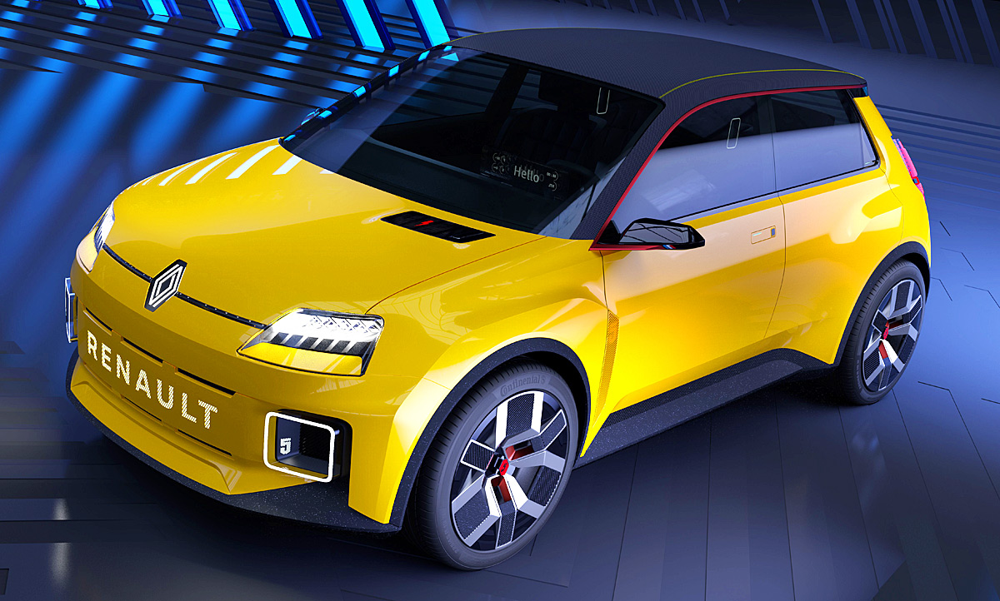
Całkowicie elektryczny R5 będzie pierwszym pojazdem Renault wyposażonym w dwukierunkową ładowarkę . Z pomocą stacji ładującej Mobilize Powerbox i usługi Mobilize V2G właściciele Renault 5 mogą nawet oddawać swoją energię z powrotem do sieci, zgodnie z niedawnym oświadczeniem Mobilize. Ponadto energia elektryczna wykorzystywana do ładowania akumulatorów będzie neutralna pod względem emisji dwutlenku węgla zgodnie z umową Mobilize energii elektrycznej. Dzięki V2G samochody elektryczne staną się źródłem energii dla gospodarstw domowych i sieci energetycznej, umożliwiając większą elastyczność. Ułatwia to również włączenie energii odnawialnej do koszyka energetycznego. Wraz z wprowadzeniem na rynek Renault 5, Mobilize chce zaoferować swoją usługę V2G. Umożliwia to właścicielom pojazdów oddawanie energii elektrycznej z pojazdu z powrotem do sieci, zmniejszając w ten sposób ich koszty. W przyszłości usługa będzie dostępna również dla innych samochodów elektrycznych Renault. „Dzięki Mobilize V2G samochód staje się magazynem energii. Właściciele muszą tylko podłączyć swój pojazd do skrzynki zasilającej, aby obniżyć rachunki za prąd i sprawić, by ich mobilność była bardziej wydajna pod względem emisji dwutlenku węgla. Średnio koszt ładowania pojazdu można obniżyć o połowę. To sprawia, że rozwiązania mobilne Mobilize są jeszcze bardziej zrównoważone i przystępne cenowo.” – Corinne Frasson, dyrektor ds. usług energetycznych w Mobilize Usługa Mobilize V2G umożliwia nie tylko wstrzymanie ładowania w okresach szczytu, ale także regenerację energii. Jest to szczególnie przydatne, gdy energia elektryczna jest droga, a zapotrzebowanie w sieci energetycznej jest wysokie. I odwrotnie, ładowanie ma miejsce tylko wtedy, gdy dostawy energii elektrycznej w sieci są wysokie, a zatem tańsze. Usługa Mobilize V2G składa się z czterech uzupełniających się komponentów: dwukierunkowa ładowarka z technologią V2G, która będzie dostępna w przyszłych samochodach elektrycznych Renault, począwszy od Renault 5 Mobilize Powerbox, dwukierunkowy terminal opracowany we współpracy z zespołami z sieci innowacji Software République a Umowa na energię elektryczną Mobilize, dostarczana przez partnera technologicznego Mobilize, The Mobility House, gwarantuje dostawę energii elektrycznej neutralnej pod względem emisji dwutlenku węgla i jest wykorzystywana do sprzedaży energii wprowadzanej do sieci aplikacja na smartfona, za pomocą której można zaprogramować ładowanie dwukierunkowe, po prostu ustawiając czas następnego użycia pojazdu i żądany poziom naładowania baterii Przyszłe Renault 5 jest pierwszym pojazdem Renault wyposażonym w nową dwukierunkową ładowarkę. Oprogramowanie do zarządzania energią umożliwia stały dostęp do usługi Mobilize V2G przy jednoczesnym oszczędzaniu energii baterii. Ładowarka dwukierunkowa może nie tylko dostarczać prąd do sieci, ale także obsługiwać urządzenia elektroniczne (funkcja „pojazd do obciążenia”). Dzięki adapterowi opracowanemu przez Renault, który jest podłączany do gniazda ładowania pojazdu, przyszłe Renault 5 będzie mogło dostarczać taką samą ilość energii, jak gniazdo 220-woltowe. Opracowany przez Software République wraz z partnerem technologicznym IoTecha Corp. rozbudowany terminal Mobilize Powerbox komunikuje się z samochodem i chmurą. Decyduje o tym, czy naładować baterię, czy odprowadzić energię elektryczną z powrotem do sieci, w zależności od potrzeb ładowania baterii, zapotrzebowania gospodarstw domowych na energię elektryczną lub zachęt ze strony rynku energii i sieci . Moc dwukierunkowego terminala, który jest produkowany we francuskiej fabryce elektroniki Lacroix, wynosi od 7 kW do 22 kW.
Ford otwiera w Kolonii nową fabrykę e-samochodów
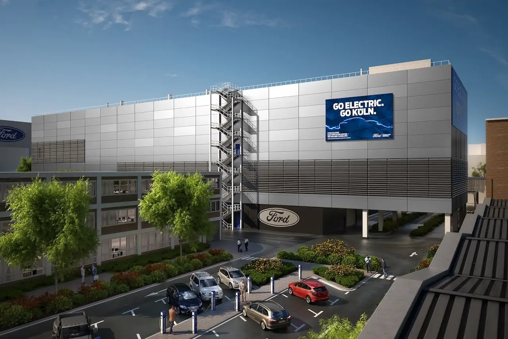
Amerykański producent samochodów Ford otworzył Centrum Pojazdów Elektrycznych Ford Cologne na początku tygodnia w obecności kanclerza Olafa Scholza (SPD) , premiera Nadrenii Północnej-Westfalii Hendrika Wüsta (CDU) i burmistrz Kolonii Henriette Reker (niezależna ). Producent samochodów informuje o tym w komunikacie prasowym. W przyszłości Ford będzie produkował najnowszą generację samochodów elektrycznych na rynek europejski w zakładzie w Kolonii. Producent samochodów przekształcił swoją fabrykę w Kolonii-Niehl, gdzie Ford buduje pojazdy od 1930 roku, inwestując w to nowe zadanie dwa miliardy dolarów. Tym krokiem firma podkreśla swoje wielkie zaufanie do Niemiec i ich wykwalifikowanej siły roboczej, a także do przyszłości produkcji samochodów w Europie. „Otwarcie Ford Cologne EV Center oznacza początek nowej generacji czystych procesów produkcyjnych i pojazdów elektrycznych w Europie ” — wyjaśnił William Clay Ford Jr., prezes wykonawczy Ford Motor Company i prawnuk założyciela firmy, Henry'ego Forda, w otwarcie w Kolonii. „Ta fabryka będzie jedną z najbardziej wydajnych i przyjaznych dla środowiska w całej branży motoryzacyjnej. Z niecierpliwością czekam na kontynuację pracy na rzecz bezemisyjnej przyszłości dla naszych dzieci i wnuków”. Głowa państwa Wüst: Decydujący krok „Centrum pojazdów elektrycznych oznacza nowy początek i jest największą inwestycją w historii fabryki Forda w Kolonii. To dobra wiadomość dla lokalizacji w Kolonii, dla produkcji samochodów w Niemczech, dla elektromobilności i dla nowych początków ” – podkreślił podczas otwarcia kanclerz federalny Olaf Scholz. A premier Nadrenii Północnej-Westfalii, Hendrik Wüst, dodaje: „Ford-Werke GmbH jest jedną z najważniejszych firm i jednym z największych pracodawców w naszym kraju związkowym. Od 90 lat Ford demonstruje w Kolonii ducha innowacyjności i inwencji. Wraz z otwarciem Centrum Elektromobilności obrany został kurs na mobilność neutralną dla klimatu. Ponadto inwestycja podkreśla siłę Nadrenii Północnej-Westfalii jako lokalizacji badawczej i biznesowej. Chcemy, aby nasz kraj stał się jednym z wiodących miejsc przyszłej mobilności w Europie i do 2045 roku stał się neutralny dla klimatu. Dzięki nowemu centrum tutaj, w Kolonii, państwo robi decydujący krok w tym kierunku”. Teren o powierzchni 125 hektarów został zaprojektowany z myślą o maksymalnej wydajności. Nowoczesne narzędzia i wysoki stopień automatyzacji charakteryzują całkowicie nowo wybudowaną linię produkcyjną i montaż akumulatorów. Zakład umożliwia produkcję ponad 250 000 samochodów elektrycznych rocznie. Pierwszym modelem, który ma tu powstać, jest akumulatorowo-elektryczny Ford Explorer, którego producent niedawno zaprezentował jako czwarty na świecie samochód elektryczny po odnoszących sukcesy modelach Mustang Mach-E , E-Transit i F-150 Lightning . Nadchodzący elektryczny crossover Forda również zjedzie z linii montażowej w Kolonii. Ford Cologne EV Center jest pierwszym na świecie pojazdem produkowanym przez Forda neutralnym pod względem emisji CO2. Fabryka w Kolonii jest zatem ważnym elementem planu, aby do 2035 r. wszystkie zakłady, ich logistyka i bezpośredni bilans bilansowy były neutralne pod względem emisji CO2. Otwarcie nowego EV Center w Kolonii jest kontynuacją wieloletniej historii sukcesu tej lokalizacji. Zakład ten od 1930 r. jest sercem europejskiego przemysłu motoryzacyjnego i produkowano tu kultowe pojazdy, takie jak Ford Model A, Taunus, Capri, Granada i Fiesta. W ciągu ponad 90 lat od założenia Ford twierdzi, że w swojej fabryce w Kolonii wyprodukował ponad 18 milionów samochodów. Umożliwiłoby to indywidualną mobilność pokoleniom ludzi w Europie. Lokalizacja jest również uważana za jeden z najbardziej wydajnych zakładów produkcyjnych producenta na świecie.
Ten nowy elektryczny Fiat nazywa się Topolino

Włoski producent samochodów Fiat, część Grupy Stellantis, ujawnił nazwę i pierwszy wizerunek swojego nowego, zrównoważonego rozwiązania w zakresie mobilności miejskiej : Topolino. Całkowicie elektryczny czterokołowiec jest gotowy, aby przyczynić się do rozwoju miejskiej mobilności elektrycznej i wnieść cały optymizm swojego imiennika do dostępnej, w pełni elektrycznej wersji, która łączy w sobie wszystkie zalety Fiata 500 , zgodnie z towarzyszącą prasą uwolnienie. Mówi się, że nowe Topolino doskonale ucieleśnia Dolce Vita i włoskiego ducha Fiata. „Samochód zaprojektowany, by wywołać uśmiech na twarzy, Topolino wnosi nowe podejście do dolce vita na ulice miast, pełne radości, optymizmu i zabawy”, pisze producent samochodów . Nowy czterokołowiec to nowa mobilna hulajnoga przeznaczona dla szerokiego grona odbiorców, w tym najmłodszych klientów, rodzin i miłośników miast. Jest idealny dla miasta i dla osób poszukujących zrównoważonych i świeżych rozwiązań w zakresie mobilności i jest zgodny z demokratyczną misją Fiata polegającą na oferowaniu zrównoważonych rozwiązań w zakresie mobilności w mieście, które są dostępne dla wszystkich. Topolino jest skierowany do młodszych pokoleń i jest czymś więcej niż tylko urządzeniem mobilnym. „Dzięki swojemu uroczemu wzornictwu, które jest odpowiednie dla każdego pokolenia, sprawi, że młodzi ludzie znów zainteresują się samochodami ” – pisze Fiat. Zbliżająca się premiera jest kolejnym krokiem na drodze marki do elektryfikacji i jest zgodna z wizją Fiata: „Zielony jest tylko wtedy, gdy jest zielony dla wszystkich” . W końcu codzienną pracą Fiata jako producenta samochodów jest ponowne przemyślenie jazdy miejskiej , uczynienie jej bardziej zrównoważoną i dostępną dla wszystkich, a nowy Topolino ze swoim fajnym designem będzie idealnym pojazdem do rozwoju zrównoważonej mobilności. Fiat nie opublikował jeszcze żadnych dalszych szczegółów na temat pojazdu poza zdjęciem. Jest oczywiście blisko spokrewniony z Oplem Rocks-e i Citroenem Ami. Na zdjęciu dwa siedzenia, zamiast drzwi na zdjęciu kordon, przez co Topolino bardziej przypomina leżak plażowy niż samochód.
Liczba śmiertelnych wypadków z udziałem autopilota Tesli gwałtownie wzrasta
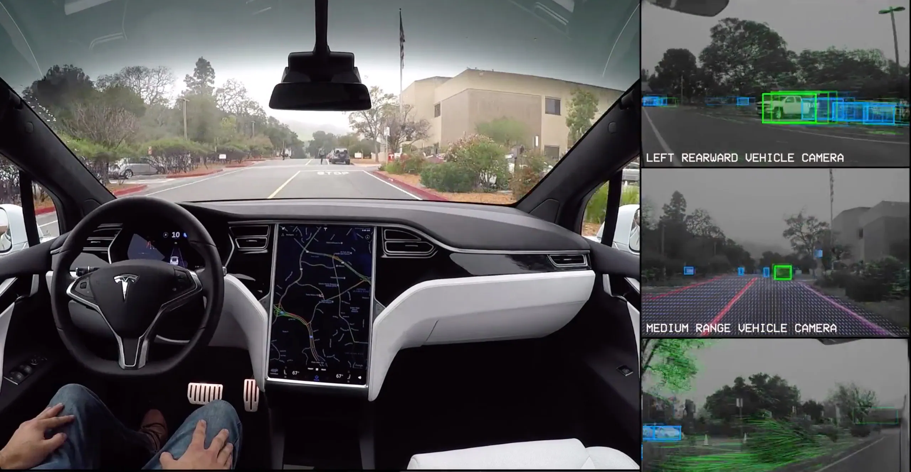
17 zabitych, 736 wypadków: to smutny bilans uszkodzeń autopilota Tesli w ciągu ostatnich czterech lat w samych Stanach Zjednoczonych. System wspomagania kierowcy jest zatem zaangażowany w znacznie więcej wypadków, niż wcześniej podejrzewano, jak donosi Washington Post, powołując się na analizę danych z National Highway Traffic Safety Administration (NHTSA). Dane odzwierciedlają niebezpieczeństwa związane z rosnącym wdrażaniem technologii wspomagania kierowcy Tesli i rosnącą obecnością samochodów na drogach. Liczba zgonów i poważnych obrażeń związanych z autopilotem również znacznie wzrosła w ostatnim czasie, jak pokazują dane. Kiedy amerykańska agencja NHTSA po raz pierwszy opublikowała ocenę wypadków z autopilotem w czerwcu 2022 r., policzyła tylko trzy zgony, które były wyraźnie związane z tą technologią. Najnowsze dane obejmują co najmniej 17 wypadków śmiertelnych, w tym 11 od samego maja 2022 r. Szef Tesli, Elon Musk, obiecał, że samochody obsługiwane w trybie autopilota powinny być bezpieczniejsze niż te prowadzone wyłącznie przez ludzkich kierowców. Przytoczył wskaźniki wypadków, porównując tryby jazdy, aby poprzeć swoje oświadczenie. Chociaż nie można ocenić, ilu wypadkom faktycznie udało się zapobiec, dane wyraźnie pokazują wady technologii. Uderzające jest to, że liczba wypadków gwałtownie wzrosła w ostatnim czasie. Według ekspertów, według Washington Post, jest to związane z rozszerzeniem grupy użytkowników i tymczasowym porzuceniem czujników radarowych. Tesla i Elon Musk nie odpowiedzieli jeszcze na prośbę amerykańskiej gazety o komentarz. NHTSA stwierdziło, że zgłoszenie wypadku z udziałem kierowcy Tesli niekoniecznie oznacza, że przyczyną była technologia. Rzeczniczka NHTSA zauważa również, że „ Wszystkie zaawansowane systemy wspomagające kierowcę wymagają od człowieka kontroli i pełnego zaangażowania w prowadzenie pojazdu przez cały czas. W związku z tym wszystkie prawa stanowe pociągają człowieka do odpowiedzialności za działanie ich pojazdów ” – a zatem także za wypadki. Była główna doradca ds. bezpieczeństwa NHTSA, Missy Cummings, profesor w College of Engineering and Computing na Uniwersytecie George'a Masona, uważa wzrost liczby wypadków Tesli za niepokojący. Problemem jest przede wszystkim liczba ofiar śmiertelnych w stosunku do ogólnej liczby wypadków. Nie jest również jasne, czy dane rejestrują również każdy wypadek, w którym brały udział systemy wspomagające kierowcę Tesli. Dane NHTSA obejmują niektóre incydenty, w przypadku których nie wiadomo, czy zastosowano autopilota, czy w pełni samodzielną jazdę.
Test wśród rodzeństwa: Skoda Enyaq kontra VW ID.5
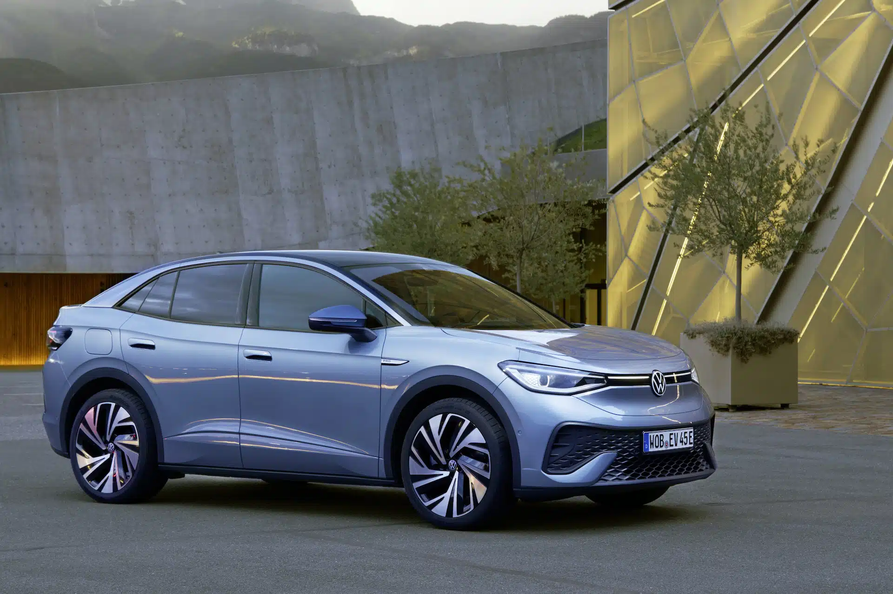
W bieżącym wydaniu brytyjskiego magazynu motoryzacyjnego Auto Express kilka modeli Volkswagena konkurowało z odpowiadającymi im, blisko spokrewnionymi modelami Skody, spółki zależnej VW . W tym kontekście VW ID.5 porównano również ze Skodą Enyaq – z otrzeźwiającym wynikiem dla marki macierzystej. Konkretnie porównano dostępne na rynku brytyjskim Enyaq iV Suite 80 oraz ID.5 Tech Pro Performance. Technicznie oba e-samochody są w dużej mierze identyczne: w obu pojazdach zamontowano silnik o mocy 201 brytyjskich koni mechanicznych (150 kW) i akumulator o pojemności 77 kWh. Skoda jest trochę dłuższa od VW i ma 4,65 metra - typowe dla Skody - ale jest o kilka kilogramów lżejsza - waży 2107 kilogramów. Zużycie jest często podawane w milach na kWh w Wielkiej Brytanii, jak ma to miejsce w przypadku Auto Express. Skoda z wynikiem 4,0 (6,44 km) wypada nieco lepiej niż Volkswagen z wynikiem 3,9 (6,28 km). Zasięg określony przez kolegów dla Enyaq wynosi 345 mil (555 kilometrów), jednak dla ID.5 tylko 323 mil (520 kilometrów) . Największą różnicą między tymi dwoma pojazdami jest cena. Testowana wersja ID.5 kosztuje w Wielkiej Brytanii 55 580 funtów (67 800 euro), podczas gdy Enyaq jest już dostępny za 46 205 funtów (53 900 euro). Niemniej jednak testerzy stwierdzili: „Co zaskakujące, Skoda wydaje się być droższym z dwóch pojazdów.” Między innymi przyczepność kierownicy i materiał zastosowany w drzwiach oceniły lepiej Enyaqa. Skoda otrzymuje więc w ostatecznym rozrachunku 4,5 na 5 gwiazdek - a prawdziwy „statek-matka” ID.5 musi zadowolić się tylko 4 gwiazdkami. W przypadku ID.5 testerzy narzekali na gorsze właściwości ergonomiczne oraz materiały, które nie zawsze są odpowiednie dla przedziału cenowego. W przypadku Enyaq zauważają, że moc ładowania może być wyższa przy 135 kW w porównaniu z konkurencją. Oba pojazdy przedkładały komfort nad przyjemność z jazdy i były całkiem wygodne w prowadzeniu – ale Enyaq miał znacznie lepszy stosunek ceny do wydajności. W teście porównawczym Skody i Volkswagena rywalizowały skądinąd klasyczne pojazdy spalinowe. Ale i tutaj czeska filia VW zachowała ogólną przewagę. Fabia wyraźnie pokonała Polo z 4,5 do 3,5 gwiazdek, podczas gdy Karoq spisał się nieco lepiej z 4,5 gwiazdkami niż T-Roc z 4 gwiazdkami. Jedynie w pojedynku Golfa z Octavią Skoda nie pokonała brata VW – ale i tak wystarczyło do remisu 4:4.
EV Box wprowadza na rynek ładowarki o mocy 400KW.
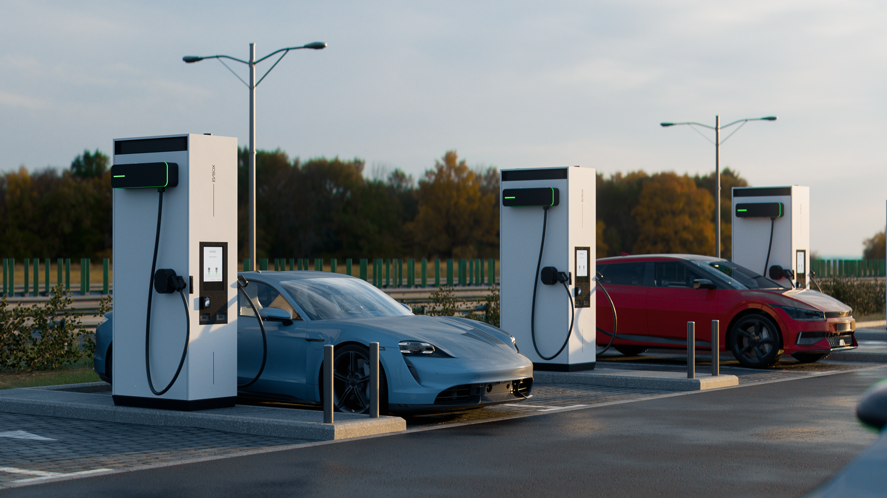
EVBox przedstawia swoją najmocniejszą obecnie stację ładującą: EVBox Troniq High Power. Zdolna dostarczyć 400 kW mocy, stacja ładująca jest pierwszą wolnostojącą stacją ładującą o takiej mocy, która została już przetestowana i sprawdzona we Francji i Holandii. Firma ma rozpocząć realizację zamówień na kluczowych rynkach europejskich od września 2023 roku. Ładowanie o dużej mocy jest kluczem do masowego przyjęcia pojazdów elektrycznych na rynek Ładowanie z dużą mocą (powyżej 350 kW) jest ewolucją szybkiego ładowania (powyżej 50 kW) i jest postrzegane przez ekspertów branżowych jako kluczowy czynnik wprowadzania samochodów elektrycznych na rynek masowy. Według badań przeprowadzonych przez firmę, zaoferowanie stacji ładowania o dużej mocy spowodowałoby, że 66% potencjalnych kierowców pojazdów elektrycznych byłoby bardziej skłonnych do zakupu samochodu elektrycznego. Dlatego czynione są starania o zainstalowanie tysięcy stacji ładowania dużej mocy na autostradach Europy i Ameryki Północnej. „Ponieważ większość pierwszych użytkowników już jeździ pojazdami elektrycznymi, musimy sprawić, by ładowanie było szybsze i bardziej rozpowszechnione niż kiedykolwiek, aby przekonać następną grupę kierowców do przejścia na pojazdy elektryczne. High Power Charging i wprowadzenie EVBox Troniq High Power to ważny krok w kierunku przyszłości, w której elektromobilność stanie się nową normą. Nie możemy się doczekać, aby dzięki temu ogłoszeniu posunąć branżę do przodu, mówi Remco Samuels, dyrektor generalny EVBox. Im szybsze są stacje ładowania, tym wygodniejsze będzie ładowanie. Kierowcy muszą krócej czekać na ładowanie pojazdu, kolejki na stacjach ładowania są coraz krótsze, a proces ładowania staje się przyjemniejszy. High Power Charging jest ważną częścią strategii innowacji EVBox. Testowane we Francji i Holandii Wprowadzenie na rynek EVBox Troniq High Power następuje po udanej fazie testów w dwóch lokalizacjach we Francji i Holandii. W ramach programu Early Adopter Program (EAP) stacja ładująca jest stale ulepszana poprzez zbieranie informacji zwrotnych w czasie rzeczywistym. W ciągu pięciu miesięcy EAP zarejestrował ponad 4000 udanych ładowań i ponad 1700 godzin aktywnego ładowania w pobliżu Amsterdamu i Tuluzy. Pojazdom elektrycznym dostarczono ponad 91 MWh energii, co potwierdza wydajność stacji ładowania i kompatybilność z różnymi typami pojazdów, typami akumulatorów, warunkami pogodowymi i przypadkami użycia. Dane techniczne EVBox Troniq High Power EVBox Troniq High Power bazuje na elastycznej i skalowalnej platformie Troniq Modular. Platforma ułatwia firmom integrację Troniq High Power z istniejącą ofertą ładowania, optymalizując zużycie energii przy jednoczesnym uniknięciu kosztownych modernizacji sieci. EVBox planuje w tym roku wyprodukować do 2000 sztuk, które zostały opracowane w zakładzie firmy w Bordeaux. Najważniejsze cechy EVBox Troniq High Power: moc wyjściowa Skalowalna architektura z maksymalnie dziesięcioma modułami mocy 40 kW. Dostępne z mocą wyjściową 320 kW, 360 kW lub 400 kW. Poprawiona wydajność suchego kabla, który osiąga do 500A przez ponad 30 minut, zapewniając bezpieczne ładowanie dużą mocą. Inteligentna dystrybucja mocy pomiędzy ładunkami Jednoczesne ładowanie dwóch pojazdów dwoma kablami CCS2. Dynamiczna alokacja obciążenia mocy dla sesji ładowania. Świetne doświadczenie dla kierowców Z automatycznym ładowaniem i wieloma opcjami płatności. Płaski ekran dotykowy i nowy interfejs użytkownika, który dostosowuje sposób użytkowania do Twoich potrzeb. Wygodny dla firm Konfigurowalne opcje brandingu za pomocą koloru lub naklejek. Łatwiejszy proces instalacji dzięki modelowi 3D i płycie podstawy. Porty skierowane do przodu zmniejszają powierzchnię zajmowaną przez stację i umożliwiają umieszczenie większej liczby stacji w miejscach o dużym natężeniu ruchu. Otwarta integracja oprogramowania do zarządzania ładowaniem. „EVBox Troniq High Power został opracowany jako źródło zysku dla lokalizacji krótkoterminowych, takich jak stacje obsługi autostrad i stacje benzynowe. Dla tych zapracowanych i mobilnych firm szybsze ładowanie oznacza większą sprzedaż. Wprowadzając na rynek EVBox Troniq High Power, chcemy pomóc naszym partnerom stać się liderami w szybko rozwijającej się branży e-mobilności i zaoferować swoim klientom najlepsze możliwe wrażenia z ładowania”. mówi Maurice van Riek, CTO EVBox. EVBox Troniq High Power można zamówić już teraz i oczekuje się, że będzie dostępny od czwartego kwartału 2023 r.
Porsche chcę dotacje do elektryków i wodoru. Nie chcą diesla.
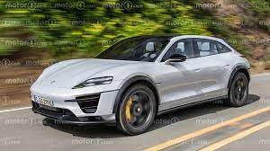
Porsche zajęło niezwykłe stanowisko w stosunku do BusinessInsider: firma wzywa do zniesienia państwowych dotacji do samochodów z silnikami Diesla. Twierdzenie to opiera się na informacjach wewnętrznych uzyskanych od zarządu spółki. Członkowie komitetu wykonawczego Porsche są przekonani, że obecna promocja oleju napędowego jest już nieaktualna w świetle ambitnych celów klimatycznych rządu federalnego. Niektórzy dyrektorzy Porsche uważają, że te fundusze mogłyby być lepiej zainwestowane w promocję samochodów elektrycznych i paliw syntetycznych . Zwracają uwagę, że dotacje w Niemczech i UE konkurują z dotacjami w Chinach i Ameryce Północnej. Na przykład w Chinach żaden podatek od zakupu nie będzie nakładany na samochody elektryczne do 2027 r., a szacunkowy koszt chińskiego rządu wyniesie 66 miliardów euro. Wraz z ustawą o redukcji inflacji (IRA) Stany Zjednoczone uruchomiły również szeroko zakrojony program dotacji dla samochodów elektrycznych i fabryk ogniw akumulatorowych. Samochody elektryczne są tam dotowane do 7 000 euro. Jednak jednym z warunków jest to, że części dotowanych pojazdów muszą być wyprodukowane w USA lub Kanadzie. Przyciąga to również europejskich producentów samochodów, takich jak Porsche czy Volkswagen. Przewodnicząca Komisji Europejskiej Ursula von der Leyen zapowiedziała, że zareaguje na hojne dotacje z Ameryki, ale na razie nie ma odpowiednika w Europie czy Niemczech. Kierownictwo Porsche uważa, że przeniesienie dotacji na olej napędowy w kierunku bardziej zrównoważonych napędów może być pierwszym krokiem w tym kierunku.
VinFast chce siedmiokrotnie zwiększyć sprzedaż e-samochodów w 2023 roku
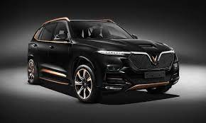
VinFast, wietnamski producent samochodów elektrycznych, wykazuje imponujący wzrost i prognozuje sprzedaż nawet 50 000 samochodów elektrycznych w 2023 r. Pomimo odpowiednich wyzwań, z którymi obecnie się zmaga. Cel sprzedażowy odpowiada niemal siedmiokrotnemu wzrostowi w stosunku do roku poprzedniego. Liczby rosną, w szczególności ze względu na eksport do krajów Ameryki Północnej i zbliżające się wejście na rynek europejski. Niedawno informowaliśmy o planach wietnamskiego producenta samochodów VinFast, aby otworzyć zakład produkcyjny w USA . Zostało to przełożone na rok 2025 wkrótce potem. Wcześniej VinFast zapowiadał w grudniu ubiegłego roku, że brak chipów opóźni debiut rynkowy w Europie . W lutym dostawy zostały wstrzymane w USA ze względu na konieczność aktualizacji oprogramowania. Teraz najwyraźniej chcą ponownie przyspieszyć. Firma, założona przez dyrektora generalnego Vingroup, Phama Nhata Vuonga, może wyjść na zero do końca 2024 roku, zakładając, że „wszystko pójdzie zgodnie z planem” . W przeszłości cele sprzedażowe nie zawsze były osiągane, chociaż może to być równoważone przez rosnący rynek globalny. Oprócz rozbudowy obszarów sprzedaży, VinFast planuje również poszerzenie portfolio produktowego. Na ulice mają wyjechać elektryczny pickup i miejski samochód na baterie, zwany też „mini autem” . Przy cenach wahających się od 10 000 do 12 000 USD, ten ostatni mógłby zostać wprowadzony na rynek jako bardzo przystępny cenowo samochód elektryczny. I w ten sposób otwórz dla siebie rynek masowy. Mimo że VinFast stoi w obliczu silnej konkurencji ze strony uznanych konkurentów, takich jak Tesla, Vuong pozostaje optymistą: „Kiedy rynek znów będzie odporny i nastroje się poprawią… VinFast przywróci radość finansową ”. 2,5 miliarda dolarów wspierane przez Vingroup i Vuong . Pomimo braku dotychczasowych zysków, do końca ubiegłego roku VinFast zaangażował ponad 8 miliardów dolarów. Ogłoszenie fuzji ze Special Purpose Acquisition Company (SPAC) Black Spade Acquisition Co obiecuje VinFast dostęp do światowych rynków i dalsze możliwości pozyskiwania funduszy. Transakcja spodziewana jest w drugiej połowie 2023 roku.
Ranking ADAC małych i mikro e-samochodów. Czy takie małe?
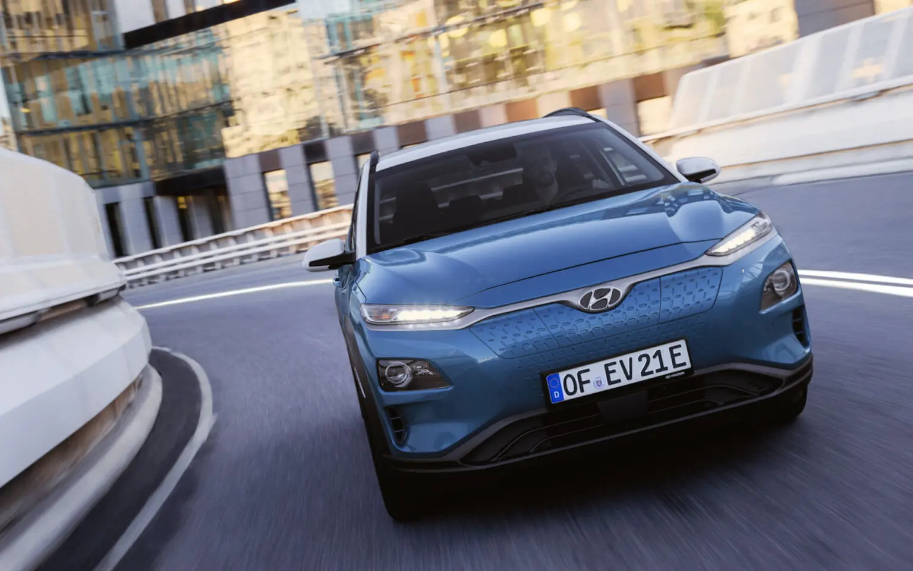
Jeśli chodzi o porównywanie samochodów, ADAC jest autorytetem od wielu lat. W ostatnich latach obserwuje się coraz więcej samochodów elektrycznych . Na koniec otrzymują ocenę szkolną za egzamin na samochód, za koszty i stosunek ceny do jakości.W dzisiejszym rankingu przyjrzeliśmy się bliżej, które z całkowicie elektrycznych małych i mikrosamochodów radziły sobie jak dotąd najlepiej w ADAC. Ocena z testu samochodu jest decydująca, w przypadku remisu stosujemy stosunek ceny do wydajności. 7.Opel Mokka-Elektryczny Opel Mokka bazuje na Corsie i dlatego jest SUV-em z segmentu małych samochodów. W teście ADAC elektryczna Mokka uzyskała ogólną ocenę 2,3 oraz 2,3 za stosunek ceny do jakości. W teście Mokka-e uzyskała najlepszą ocenę w kategorii silnik/napęd z wynikiem 1,4, a najsłabszą w kategorii nadwozie/bagażnik z wynikiem 3,2. 6. Peugeot e-208 Kolejne miejsce również należy do grupy Stellantis . Mały samochód Peugeota, który jest blisko spokrewniony z Corsą, również osiągnął notę 2,3, a stosunek ceny do osiągów wyniósł nawet 1,6. Tutaj również ADAC znajduje swoją największą siłę w układzie silnik/napęd, czego dowodem jest ocena 1.3. Jednak podobnie jak w przypadku Mokki, za nadwozie/bagażnik jest tylko 3,2. 5.Honda e Przytulna i sympatyczna mała Honda była najwyraźniej bardzo popularna wśród ADAC i ogólnie uzyskała ocenę 2,2 - taką samą ocenę przyznaje się również za stosunek ceny do wydajności. Jak większość e-samochodów, Honda również imponuje, szczególnie w kategorii silnik/napęd, z bardzo dobrą oceną 1,2. Jednak dla wygody jest tylko gładka 3. Niestety, Honda e jest trudna do dostarczenia. 4.Peugeot 2008-e GT Mały SUV Peugeota jest o jedną dziesiątą lepszy od swojego niżej położonego brata, 208: 2,2 został przyznany przez ADAC jako wynik testowy, 2,1 za stosunek ceny do wydajności. Silnik/napęd otrzymał ocenę 1,4, nadwozie/bagażnik tylko 3. 3.Opel Corsa Spośród wszystkich pojazdów Stellantis na tej liście jeden znalazł się na podium: elektryczny Opel Corsa również uzyskał wynik 2,2 w teście ADAC, ale uzyskał wynik o 2 lepszy niż Honda i Peugeot pod względem stosunku jakości do ceny. Najwyższa ocena 1,3 przypadła kategorii Środowisko/EkoTest, najgorsza ocena 3,2 za nadwozie/bagażnik. 1 i 2 razem Hyundai Kona Electric i Kia E-Soul Dwaj blisko spokrewnieni technicznie Koreańczycy zajmują pierwsze miejsce z wynikiem testu ADAC na poziomie 2,1 i stosunkiem ceny do wydajności na poziomie 2,2. Istnieją najwyższe oceny z prostą 1 za silnik/napęd (e-Soul) i środowisko/EcoTest (Kona). Oczywiście oba pojazdy wypadają najsłabiej w klasie małych aut elektrycznych pod względem nadwozia/bagażnika (2,9 i 3,0).
Ranking ADAC dużych elektryków.
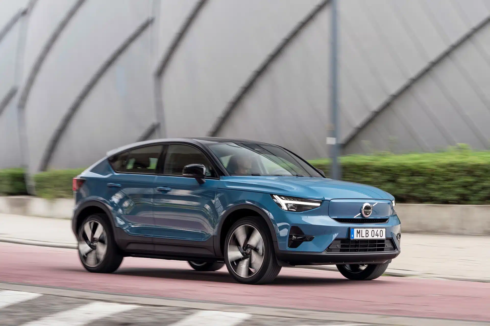
Jeśli chodzi o porównywanie samochodów, ADAC jest autorytetem od wielu lat. Na potrzeby dzisiejszego rankingu przyjrzeliśmy się bliżej, które w pełni elektryczne samochody z niższej klasy średniej wypadły do tej pory najlepiej w testach ADAC. Ocena z testu samochodu jest decydująca; w przypadku remisu stosujemy stosunek ceny do wydajności i ocenę kosztów. Dwa tygodnie temu wymieniliśmy najwyższe noty ADAC dla mikro i małych samochodów. 7 miejsce: BYD Atto 3 Kompaktowy SUV z Chin zrobił bardzo dobre wrażenie na targach ADAC, mogliśmy się też przekonać o jego „bujanych” właściwościach. Z oceną 2,1, ale ze względu na brak ocen cząstkowych za stosunek ceny do jakości i kosztów, wciąż plasuje się na liście rankingowej. Najwyższa ocena w kategorii „silnik/napęd” to 1,1. 6. miejsce: Renault Megane E-Tech Śliczne Renault otrzymało również ocenę ADAC 2,1, którym z naszego doświadczenia wynika, że można nim jeździć ekonomicznie i komfortowo. Megane otrzymuje 2,2 za stosunek jakości do ceny i 2,4 za koszty. Również w przypadku Renault „silnik/napęd” uzyskał najwyższą ocenę 1,2. 5 miejsce: Cupra Born Brat VW ID.3 również otrzymał ocenę 2,1 od ADAC. Podobnie jak w przypadku Megane, o piątym miejscu decyduje ocena 2,2 za stosunek jakości do ceny, a 2,3 za koszty. I znowu „silnik/napęd” uzyskał najwyższą ocenę z oceną 1,1 – po prostu e-samochód. 4. miejsce: VW ID.3 1,1 dla napędu wypada również dla ID.3, który technicznie jest w dużej mierze taki sam, ale ogólnie ocena ADAC jest nieco lepsza niż dla Cupra Born: Z 2,0 (cena-wydajność 2,2, koszt 2,0), Volkswagen ledwo ominął podium. 2. miejsce: Mercedes EQA Nie ma trzeciego miejsca z powodu identycznych ocen, ale dwa drugie miejsca. Najmniejszy elektryczny Mercedes imponuje ogólną oceną 1,9 w teście ADAC. Oprócz „Silnika/napędu” z wynikiem 1,1, EQA uzyskał również bardzo dobre wyniki w kategorii „Bezpieczeństwo” z wynikiem 1,4. 2. miejsce: Kia Niro EV Podobnie jak EQA, kompaktowy SUV Koreańczyków ma 1,9 w ogólnej ocenie ADAC. A ponieważ cena/wydajność z 2.2 i kosztami z 2.6 są takie same jak w przypadku Mercedesa, tym razem drugie miejsce jest dzielone. Oprócz klasycznego e-samochodu „Silnik/Skrzynia biegów” z 1.1, Kia jest szczególnie imponująca w „Environment/EcoTest” z 1.2. Udało nam się również ustalić, że Niro można prowadzić bardzo wydajnie.
1. miejsce: Volvo C40 Volvo, które uzyskało końcową notę 1,8, jest najlepszym e-samochodem z niższej średniej klasy, testowanym do tej pory przez ADAC. Chociaż koszty są wysokie (ocena 3,4), ogólne wrażenie było najwyraźniej po prostu najlepsze: w żadnej kategorii nie było oceny gorszej niż 2,5.Recykling baterii: co musisz o tym wiedzieć
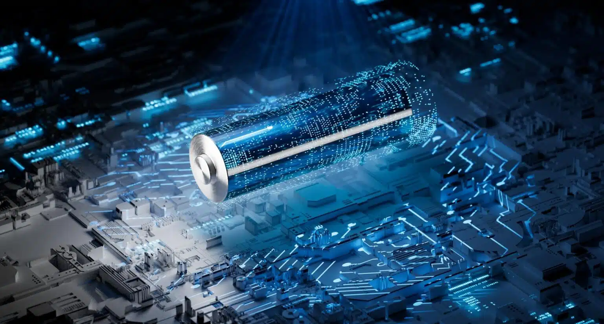
W stale rozwijającym się świecie technologii akumulatory litowo-jonowe stały się nieodzowną częścią naszego codziennego życia. Można je znaleźć w najróżniejszych urządzeniach, od smartfonów i laptopów po samochody elektryczne i stacjonarne systemy magazynowania energii. Jednak wraz ze wzrostem zapotrzebowania na te akumulatory rośnie również potrzeba zapewnienia ich trwałości przez cały cykl życia, w tym zarządzanie wycofaniem z eksploatacji. Ważnym aspektem tego zarządzania jest recykling akumulatorów litowo-jonowych. Po zakończeniu cyklu życia akumulatory te można poddać recyklingowi w celu odzyskania zawartych w nich cennych metali, takich jak nikiel, kobalt i lit. W zależności od zastosowanej techniki recyklingu, produkty z tych procesów mogą wymagać dalszej rafinacji lub przetworzenia, aby można je było ponownie wykorzystać do produkcji nowych baterii. W swoim najnowszym raporcie „Rynek recyklingu akumulatorów litowo-jonowych 2023-2043” IDTechEx przeanalizował trzy kluczowe technologie recyklingu akumulatorów litowo-jonowych. Technologie te obejmują recykling mechaniczny, hydrometalurgiczny i pirometalurgiczny. Poniżej przedstawimy zwięzły przegląd tych technologii. Recykling mechaniczny jest najprostszą techniką stosowaną przez wielu graczy na całym świecie. Zwykle jest to pierwszy krok w recyklingu akumulatorów litowo-jonowych i często rozpoczyna się od ręcznego demontażu, który wymaga wykwalifikowanej siły roboczej ze względu na zróżnicowaną konstrukcję akumulatorów pojazdów elektrycznych. Typowe kolejne etapy to rozdrabnianie, mielenie i kruszenie. Wysokiej jakości materiały są rozdrabniane i oddzielane od folii i obudowy. Rezultatem jest czarna masa, którą należy dalej przetwarzać w procesach hydrometalurgicznych lub pirometalurgicznych w celu uzyskania soli metali o jakości akumulatorowej. Recykling pirometalurgiczny odnosi się do wykorzystania ciepła do odzyskiwania materiałów z baterii. Jest to kosztowny i energochłonny proces, który wymaga oczyszczania gazów odlotowych. Pirometalurgia wytwarza mieszany strumień stopu metalu i żużla zawierający lit, mangan i aluminium. W związku z tym wymagana jest dalsza obróbka hydrometalurgiczna, jeśli mają zostać odzyskane wszystkie cenne metale nadające się do baterii. Recykling hydrometalurgiczny można wykorzystać do bezpośredniego recyklingu czarnej pasty lub rafinacji stopów wytwarzanych pirometalurgicznie w sole metali do zastosowań w akumulatorach. Sole te można włączyć do produkcji nowych prekursorów katod i dlatego mają większą wartość niż czarna masa uzyskana z recyklingu mechanicznego. Główne zalety recyklingu hydrometalurgicznego polegają na tym, że można odzyskać większą część cennych metali i że jest on mniej energochłonny niż recykling pirometalurgiczny. Obecnie większość możliwości recyklingu hydrometalurgicznego zlokalizowana jest w regionie Azji i Pacyfiku. Jednak gracze w Europie i Stanach Zjednoczonych również dostrzegli korzyści płynące z przetwarzania hydrometalurgicznego i są w trakcie zwiększania swoich zdolności hydrometalurgicznych. Oprócz tych trzech głównych technik, badane są również inne możliwości. Recykling bezpośredni to technika, która obejmuje mechaniczną obróbkę wstępną i separację komponentów, a następnie reaktywację materiału baterii w celu odzyskania pojemności utraconej podczas cyklu, ale bez niszczenia struktury krystalicznej materiału katody. Producenci akumulatorów chętnie pozyskują materiały pochodzące z recyklingu, aby zrównoważyć wahania cen metali i zabezpieczyć dostawy materiałów. Należy zauważyć, że sami producenci początkowo polegają na tzw. podejściach drugiego życia w celu przedłużenia żywotności akumulatorów. Dopiero wtedy akumulatory są poddawane recyklingowi.
Chiński E-kontenerowiec.
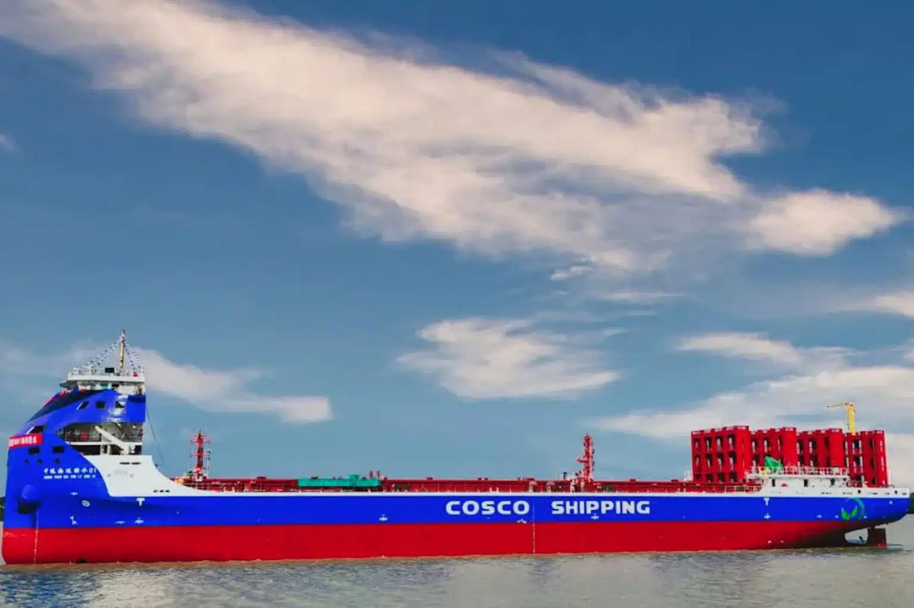
Kilka dni temu w Chinach zwodowano największy w pełni elektryczny kontenerowiec na świecie. Frachtowiec N 997 firmy żeglugowej Cosco ma 120 metrów długości i ma na pokładzie całkowitą pojemność baterii 50 megawatogodzin, czyli 50 000 kWh. Jak donosi dzisiaj Logistik, jest to największa bateria, jaka została dotychczas wykorzystana w wysyłce . Napędzają go dwa silniki o mocy 900 kW. Jak podaje Golem.de, zbudowany w Yangzhou elektryczny frachtowiec ma być używany na Morzu Wschodniochińskim i rzece Jangcy. „Firma spedycyjna mówi w swoim oświadczeniu o kluczowym projekcie, który ma na celu promowanie rozwoju ekologicznej, bezemisyjnej żeglugi ” – pisze dziś Logistik. Cosco chce w przyszłości dalej rozwijać elektromobilność, zwłaszcza w żegludze śródlądowej. W porównaniu z konwencjonalnym statkiem towarowym tej samej wielkości, N 997 ma zaoszczędzić 32 tony CO2 w ciągu jednego dnia – tyle, ile przeciętny samochód benzynowy powoduje ponad 200 000 kilometrów. Potencjał ograniczenia emisji szkodliwych dla klimatu w żegludze jest ogromny. Ogólnie rzecz biorąc , wodór lub paliwa syntetyczne (e-paliwa) są planowane dla przyjaznych dla klimatu układów napędowych statków , ponieważ można je zatankować szybciej i generalnie zapewniają większy zasięg. Jednak nowy chiński frachtowiec z Chin pokazuje, że rozwiązania akumulatorowo-elektryczne są również opcją dla mobilności na wodzie, przynajmniej na trasach średniodystansowych . Elektryczne promy w Norwegii Na krótszych trasach elektromobilność dla statków nie stanowi żadnego problemu, co pokazały między innymi promy elektryczne w Norwegii . Ampere, pierwszy na świecie w pełni elektryczny prom, pływa po wodach Norwegii od 2015 roku. Jest obsługiwany przez norweską firmę żeglugową Norled, a Siemens dostarczył układy napędowe. Emisja CO2 wynosi tylko pięć procent emisji konwencjonalnego promu. A koszty eksploatacji są o 80 procent niższe, co oznacza, że zakup powinien się szybko zwrócić ekonomicznie ze względu na wyższą cenę zakupu.
Renault mocno stawia na samochody elektryczne na każdą kieszeń.
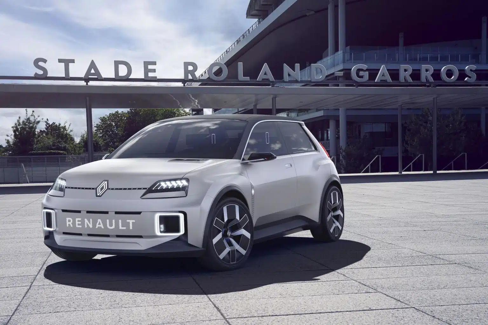
W ramach ambitnego posunięcia na rzecz demokratyzacji mobilności elektrycznej Renault planuje obniżyć koszty samochodów elektrycznych. Posunięcie to mogłoby utorować drogę do szerszej akceptacji samochodów elektrycznych przez społeczeństwo i przekształcić całą branżę.Renault dostrzegło potrzebę dostosowania się do szybko zmieniającego się krajobrazu mobilności elektrycznej. Obecnie Renault Twingo E-Tech, jeden z najpopularniejszych modeli elektrycznych, kosztuje 28 000 euro. Pomimo swojej pozycji jednego z niewielu samochodów elektrycznych w cenie poniżej 30 000 euro, Renault widzi pole do ulepszeń. Firma dostrzega potrzebę redukcji kosztów zarówno dla konsumentów, jak i producentów.W wywiadzie dla Autogazette szef marki Renault Cambolive wyjaśnił zalety tej zmiany: „Dzięki naszemu e-oddziałowi Ampere będziemy mogli nie tylko jeszcze bardziej obniżyć koszty e-samochodu, ale także koszty stałe naszej firmy. Podkreślił także, że redukując koszty dystrybucji, Renault może zwiększyć sprzedaż. Szef marki Renault zasugerował, że klienci odniosą korzyści z tej restrukturyzacji, zwłaszcza pod względem cen. Wizją Renault jest wprowadzenie na rynek samochodu elektrycznego za 25 000 euro . Co więcej, elektryczna wersja R5 będzie kosztować niecałe 30 000 euro . Dla porównania: oczekuje się, że VW ID.2 będzie dostępny w cenie od około 25 000 euro, przy czym odmiany Skody i Seata będą prawdopodobnie nieco niższe.Cambolive optymistycznie patrzy w przyszłość samochodów elektrycznych. Powiedział: „Od początku roku zauważamy rosnący popyt na samochody elektryczne.” Spodziewa się wyższej sprzedaży pojazdów elektrycznych dla Renault w 2023 roku. Kolejnym pozytywnym aspektem jest poprawa dostępności półprzewodników. Dzięki temu przestoje w produkcji i dłuższe czasy oczekiwania na e-samochody należą już prawdopodobnie do przeszłości.
Te 7 e-samochodów ma największe zasięgi.
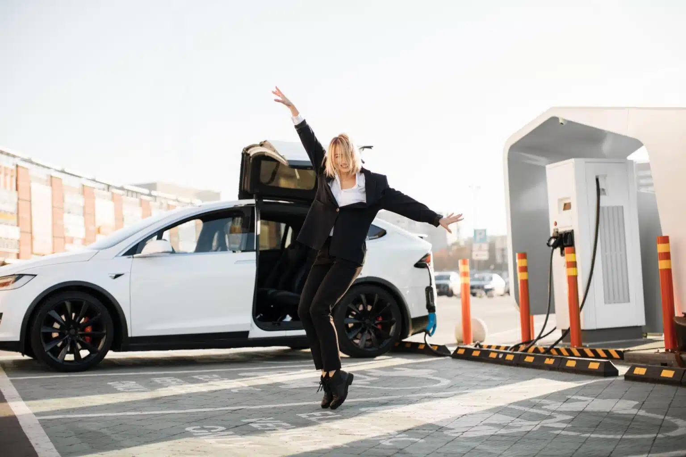
ADAC kolejny raz testuje samochody elektryczne. Już wcześniej pisałem, które modele są najbardziej ekonomiczne według testu ECO. Dziś przyglądamy się, które samochody elektryczne, zdaniem ADAC, osiągają najdłuższy zasięg w rzeczywistych warunkach, zanim będą musiały zostać naładowane – lub w przypadku Nio, konieczna będzie wymiana baterii na pełną. Testowano kilka wersji modelu, braliśmy pod uwagę tylko tę o największym zasięgu. 7. miejsce: Nio ET7 Luksusowy sedan chińskiego producenta startuje w pierwszej siódemce rankingu ADAC. Bateria ma pojemność netto 90 kWh, co pozwala na przejechanie 485 kilometrów w realistycznie panujących warunkach. 6. miejsce: BMW i4 Z realistycznymi 490 kilometrami według ADAC, monachijski sedan z akumulatorem o pojemności netto prawie 81 kWh jest o pięć kilometrów dalej od Nio. Testowano eDrive 40. 5. miejsce: Mercedes EQE Akumulator o pojemności netto 90,6 kWh pozwala elektrycznej Klasie E przejechać w rzeczywistych warunkach 530 kilometrów, przynajmniej w wersji 350+ testowanej przez ADAC 4. miejsce: BMW i7 Kolejne auto z Monachium omija podium: testowany xDrive 60 z akumulatorem o pojemności netto 101,7 kWh pokonał w teście ADAC 545 kilometrów. Czyli (teoretycznie) z Gdyni do Katowic. 3. miejsce: Hyundai Ioniq 6 Koreańczyk ze stosunkowo małym akumulatorem o pojemności netto 77 kWh wkrada się na podium, ponieważ dzięki swojej wyjątkowej wydajności w teście ADAC pokonuje imponujące 555 kilometrów w rzeczywistych warunkach. 2. miejsce: Mercedes EQS Z największą baterią na rynku – o pojemności netto wynoszącej 108 kWh – flagowiec ze Stuttgartu pokonał w teście ADAC 575 kilometrów, czyli z Gdyni do Wałbrzycha. Testowano wersję 450+. 1. miejsce: BMW iX Dzięki równie imponującemu akumulatorowi o pojemności netto 105 kWh mocny monachijski samochód zajął pierwsze miejsce w teście ADAC. Testerzy przejechali 610 kilometrów – to wystarczy przy normalnym stylu jazdy pojechać z Koszalina do Katowic.
-
De Meo z zadowoleniem przyjmuje odrzucenie przez Włochy normy Euro 7
Luca de Meo, dyrektor generalny francuskiego producenta samochodów Renault, który sam jest Włochem, podziękował włoskiemu rządowi za odrzucenie proponowanych przez ten kraj nowych przepisów dotyczących normy emisji spalin Euro 7. Według Automotive News Europe, jako prezesa europejskiego lobby motoryzacyjnego ACEA, mogłoby to odwrócić uwagę przemysłu motoryzacyjnego od drogi ku elektryfikacji. Zaostrzenie dopuszczalnych wartości emisji zanieczyszczeń, które mają obowiązywać od 2025 r. dla samochodów osobowych i dostawczych oraz od 2027 r. dla ciężarówek i autobusów, będzie negocjowane między krajami UE a ustawodawcami jeszcze w tym roku. […]
-
Co mają wspólnego żubry i OZE?
Sprawa ma swój początek w 2020 roku, czyli odmowie wydania decyzji środowiskowej na budowę farmy na Polanie Białowieskiej. Regionalna Dyrekcja Ochrony Środowiska w Białymstoku odmówiła zresztą już kilka razy, a wszystkie odmowy argumentowano podobnie: inwestycja będzie negatywnie oddziaływała na środowisko orlika krzykliwego i stoi w opozycji do zapisów planu ochrony Natura 2000 Puszcza Białowieska. Przyjęty […]
-
Dopłaty do magazynów energii
Magazyny energii stają się coraz popularniejsze. Nie bez przyczyny – pozwalają na zwiększenie zużycia energii wyprodukowanej przez gospodarstwo bez wprowadzania jej do sieci. Są też dobrym rozwiązaniem w obliczu trwającego kryzysu energetycznego, dlatego coraz częściej takie magazyny powstają w wyniki prywatnych inwestycji. Zmiany w programie mają sprawić, że będzie ich jeszcze więcej! Magazyn to […]
-
Grant OZE dla domów wielorodzinnych
Fotowoltaika to przyszłość – nie ulega to wątpliwości. Instalacje OZE w powszechnym użyciu to ogromny potencjał dla sektora energetycznego, a rządzący wydają się być tego świadomi. 30 listopada 2022 r. zostały opublikowane przepisy ustawy z 29 września 2022 r. o zmianie niektórych ustaw wspierających poprawę warunków mieszkaniowych – to w ramach nich do 2026 roku […]
-
Polsko-chińskie elektryki
Lider technologii i jednocześnie największa prywatna firma motoryzacyjna w Chinach, Geely Holding, została partnerem technologicznym ElectroMobility Poland. Firmy podpisały umowę licencyjną na mocy której polskiemu producentowi udostępniona zostanie platforma SEA (Sustainable Expirience Architecture) a Geely Holding oficjalnie wesprze pierwszą generację polskich samochodów elektrycznych. Samochody wejdą na polski rynek pod marką Izera. Pierwszy będzie SUV […]
-
Zakaz rejestracji samochodów spalinowych od 2035 roku
27 października Unia Europejska doszła do porozumienia w kwestii norm CO2 dla pojazdów osobowych i dostawczych. Od 2035 roku w krajach UE rejestrować będzie można jedynie pojazdy z napędem elektrycznym i wodorowym – zakaz będzie więc obejmował również hybrydy. Wyznaczono też cel pośredni – w 2030 roku w porównaniu do roku 2021 emisja CO2 ma […]
-
Stacje ładowania co 60 km w UE
19 października Komisja Transportu i Turystyki przy Parlamencie Europejskim przegłosowała przyjęcie mandatu negocjacyjnego traktującego o rozmieszczeniu infrastruktury dla pojazdów stosujących paliwa alternatywne. Zakłada się, że już w 2026 roku przy głównych drogach UE stacje ładowania mają być rozmieszczone co 60 kilometrów! Posłowie zasugerowali również działania w celu utworzenia większej ilości stacji tankowania wodoru –te miałyby […]
-
Sukces naukowców z AGH
Nawet 70% energii, która powstaje przy okazji przemysłowych procesów chemicznych jest rozpraszana – w praktyce oznacza to, że w ten sposób marnuje się duża ilość ciepła, którego odzyskanie nie jest łatwym zadaniem. Nad rozwiązaniem tego problemu pracowali polscy naukowcy z Akademii Górniczo-Hutnicza we współpracy z Siecią Badawczą Łukasiewicz i Instytutem Fizyki PAN – udało im […]
-
Pod koniec czerwca 2022 r. w Polsce było zarejestrowanych łącznie 50 990 osobowych i użytkowych samochodów z napędem elektrycznym. Przez pierwsze półrocze roku 2022, liczba elektryków wzrosła o 12 207 sztuk, jak wynika z Licznika Elektromobilności PZPM i PSPA. Ile elektrycznych pojazdów porusza się po polskich drogach? W czerwcu 2022 r. po polskich drogach jeździło […]
-
Jakich zmian dokonuje rynek transportu produktów spożywczych?
Postawiono na testy zeroemisyjnych samochodów dostawczych. Od poprzedniego roku wprowadzono w pełni elektryczne samochody dystrybucyjne z zabudową chłodniczą, które dostarczają towar bezpośrednio do sklepów na terenie województwa Śląskiego. By móc prężnie rozwijać flotę i sprawnie zarządzać dostawami, sieć sklepów zainwestowała we własne stacje ładowania aut elektrycznych w centrach w dwóch centrach logistycznych oraz w swojej […]